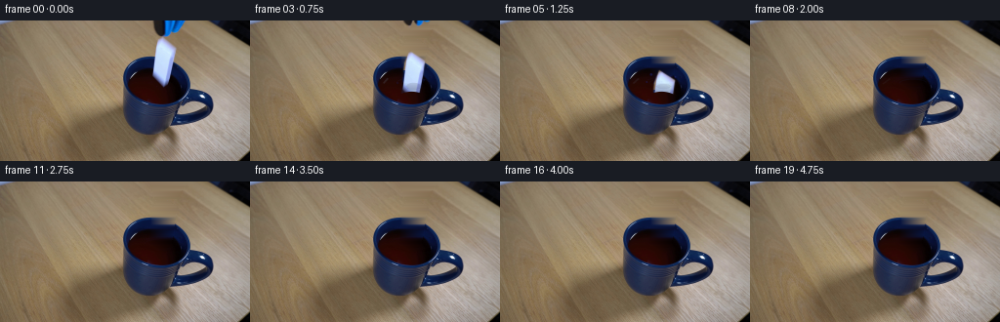
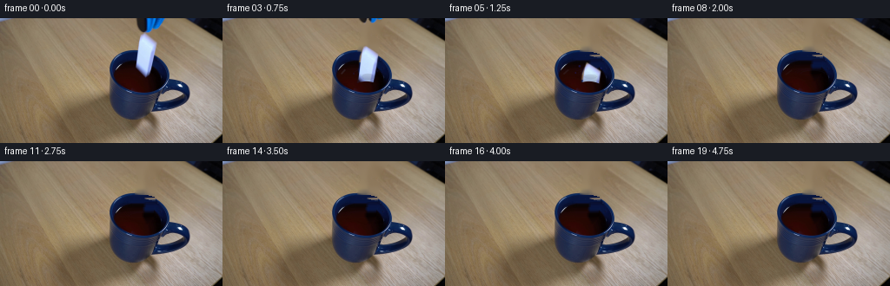
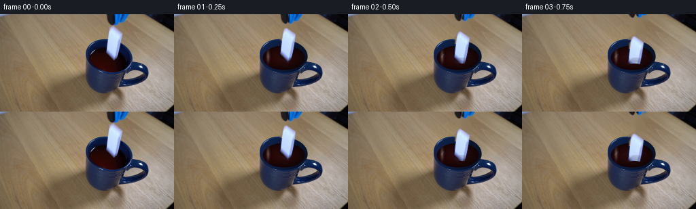
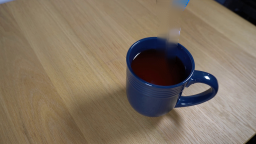
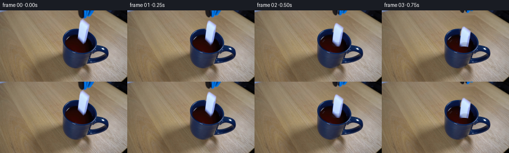
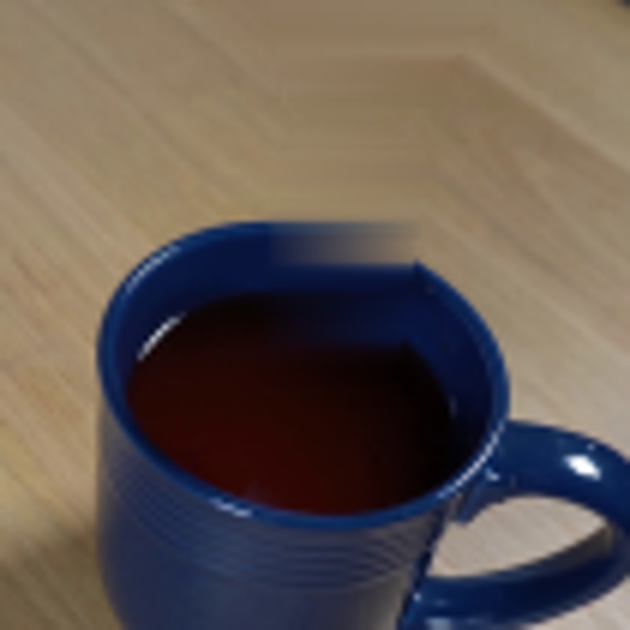
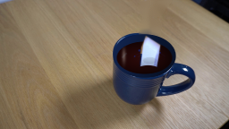

CODING AGENTS AS PIXEL WORLD MODELS
traex/GPT-5.6-Sol · 0046
点击播放 · 原生 RGB 像素
逐轮保存的候选
回放视频、检查图与代码变化。
每份候选均可单独播放。实际图片检查记录在下方工具轨迹中。
候选 01播放与检查图
点击播放 · 原生 RGB 像素
展开代码变化
--- 上一保存版本
+++ 本次保存版本
@@ -0,0 +1,170 @@
+from pathlib import Path
+import cv2
+import numpy as np
+from PIL import Image, ImageDraw
+import artifact_io
+
+CASE_DIR = Path(__file__).resolve().parent
+W, H = 256, 144
+
+
+def soft_polygon(points, blur=0.65):
+ """Antialiased polygon mask made at 4x resolution."""
+ s = 4
+ m = np.zeros((H*s, W*s), np.uint8)
+ pts = np.round(np.asarray(points, np.float32)*s).astype(np.int32)
+ cv2.fillPoly(m, [pts], 255, lineType=cv2.LINE_AA)
+ m = cv2.resize(m, (W, H), interpolation=cv2.INTER_AREA)
+ if blur:
+ m = cv2.GaussianBlur(m, (0, 0), blur)
+ return m.astype(np.float32)/255.0
+
+
+def shift(arr, dx, dy, interpolation=cv2.INTER_LINEAR):
+ M = np.float32([[1, 0, dx], [0, 1, dy]])
+ return cv2.warpAffine(arr, M, (W, H), flags=interpolation,
+ borderMode=cv2.BORDER_CONSTANT, borderValue=0)
+
+
+def composite(dst, src, alpha):
+ a = np.clip(alpha, 0, 1)[..., None]
+ return np.clip(dst*(1-a) + src*a, 0, 255)
+
+
+def overlay_rgba(dst, layer):
+ return composite(dst, layer[..., :3].astype(np.float32), layer[..., 3].astype(np.float32)/255)
+
+
+def liquid_effect(frame, k):
+ """Perspective ripples and a small, physically timed impact splash."""
+ # Work large for smooth subpixel curves.
+ S = 4
+ rgba = Image.new("RGBA", (W*S, H*S), (0, 0, 0, 0))
+ d = ImageDraw.Draw(rgba)
+ def el(box, **kw): d.ellipse(tuple(int(v*S) for v in box), **kw)
+ def line(points, **kw): d.line([(int(x*S), int(y*S)) for x,y in points], **kw)
+ def poly(points, **kw): d.polygon([(int(x*S), int(y*S)) for x,y in points], **kw)
+
+ # Ripples start when the domino breaks the surface and then damp away.
+ if 2 <= k <= 15:
+ age = k - 2
+ amp = np.exp(-age/5.0)
+ cx, cy = 167, 64
+ # Expanding rings, flattened by surface perspective. Only subtle warm
+ # highlights are used so the original dark liquid remains photographic.
+ radii = [4 + 1.7*age, 10 + 1.35*age, 16 + 0.95*age]
+ for j, r in enumerate(radii):
+ if r > 31: continue
+ a = int((56-10*j)*amp)
+ width = max(2, int((1.25 if j == 0 else .85)*S))
+ box = ((cx-r)*S, (cy-r*.31)*S, (cx+r)*S, (cy+r*.31)*S)
+ d.arc(tuple(map(int,box)), 182, 351, fill=(145, 57, 39, a), width=width)
+ d.arc(tuple(map(int,box)), 4, 171, fill=(38, 9, 11, int(a*.72)), width=width)
+ # A shifting reflected glint on the left-hand wave.
+ if age < 8:
+ line([(137-age*.15, 64+age*.13), (141+age*.35, 59+age*.1)],
+ fill=(213, 179, 142, int(38*amp)), width=2*S)
+
+ # Crown and upward sheets just after impact. Burgundy coloring keeps this
+ # clearly liquid rather than an added object.
+ if 3 <= k <= 7:
+ q = {3:.42, 4:1.0, 5:.72, 6:.38, 7:.14}[k]
+ # low crown around entry point
+ poly([(157,64),(160,59-4*q),(163,63),(166,56-6*q),(169,63),
+ (173,58-4*q),(176,65),(173,68),(160,68)],
+ fill=(75, 15, 16, int(195*q)))
+ line([(158,65),(161,60-5*q)], fill=(165,57,39,int(150*q)), width=S)
+ line([(173,64),(175,59-4*q)], fill=(118,32,28,int(150*q)), width=S)
+ # separated droplets; positions rise and then fall over the sequence
+ t = k-3
+ droplets = [
+ (157-1.1*t, 59-3.3*t+0.72*t*t, 1.25),
+ (178+0.8*t, 61-2.8*t+0.65*t*t, 1.05),
+ (151-0.3*t, 64-1.6*t+0.55*t*t, .75),
+ ]
+ for x,y,r in droplets:
+ el((x-r,y-r,x+r,y+r), fill=(91,24,22,int(205*q)))
+ el((x-r*.35,y-r*.55,x+r*.15,y-r*.05), fill=(207,110,82,int(115*q)))
+
+ layer = np.asarray(rgba.resize((W,H), Image.Resampling.LANCZOS)).copy()
+ # Restrict painted ripples to the visible liquid. Splash pixels above the
+ # surface are retained by allowing a central impact corridor.
+ yy, xx = np.mgrid[0:H,0:W]
+ liquid = (((xx-161)/32.2)**2 + ((yy-64)/18.0)**2 <= 1)
+ corridor = (xx > 145) & (xx < 182) & (yy >= 43) & (yy <= 68)
+ keep = liquid | corridor
+ layer[...,3] = (layer[...,3].astype(np.float32)*keep).astype(np.uint8)
+ return overlay_rgba(frame, layer)
+
+
+def make_frames():
+ first_rgb = np.asarray(Image.open(CASE_DIR/'first_frame.png').convert('RGB'))
+ first = cv2.cvtColor(first_rgb, cv2.COLOR_RGB2BGR)
+
+ # Masks closely trace only the two moving items. The background is rebuilt
+ # once, keeping the locked camera/table/mug perfectly static thereafter.
+ domino = soft_polygon([(163,17),(179,27),(174,61),(168,71),(155,62),(158,30)], .55)
+ # Split the tong head into two jaws, allowing a tiny opening action.
+ jaw_left = soft_polygon([(157,0),(169,0),(169,9),(166,17),(161,18),(158,11)], .5)
+ jaw_right = soft_polygon([(169,0),(190,0),(184,8),(179,16),(170,17),(166,12)], .5)
+ all_moving = np.maximum(domino, np.maximum(jaw_left, jaw_right))
+ inp_mask = (all_moving > .08).astype(np.uint8)*255
+ inp_mask = cv2.dilate(inp_mask, np.ones((3,3),np.uint8), iterations=1)
+ background = cv2.inpaint(first, inp_mask, 6, cv2.INPAINT_TELEA).astype(np.float32)
+
+ src = first.astype(np.float32)
+ frames = [first_rgb.copy()] # contractual pixel-identical first frame
+
+ # Accelerating fall in image pixels. Since the domino starts touching the
+ # liquid, its descent is quickly slowed after impact rather than free-fall
+ # continuing through the ceramic mug.
+ domino_y = [0,2,7,14,23,34,45,54,62,69,75,80,84,87,89,91,92,93,94,95]
+ tool_y = [0,-2,-6,-11,-17,-24,-31,-38,-45,-52,-58,-64,-70,-76,-82,-88,-94,-100,-106,-112]
+
+ for k in range(1,20):
+ f = background.copy()
+ f = liquid_effect(f, k)
+
+ # The grabber withdraws while its jaws open by a few pixels. It is
+ # naturally cropped by the fixed frame rather than scaling/fading.
+ opening = min(3.3, k*.72)
+ for mask, dx in ((jaw_left,-opening),(jaw_right,opening)):
+ a = shift(mask, dx, tool_y[k])
+ s = shift(src, dx, tool_y[k])
+ f = composite(f, s, a)
+
+ # Falling ceramic domino. The front half of the mug occludes it at the
+ # correct rim depth. A narrow submerged band gains a tea-colored tint.
+ dy = domino_y[k]
+ a = shift(domino, 0, dy)
+ s = shift(src, 0, dy)
+ yy, xx = np.mgrid[0:H,0:W]
+ # Perspective front lip: slightly lower at the center/right.
+ cutoff = 72.0 + .018*(xx-165)**2
+ a *= np.clip(cutoff + .9 - yy, 0, 1)
+ # Warm refraction only in the few pixels immediately under the surface.
+ submerged = np.clip((yy-63)/9,0,1)[...,None]
+ tint = np.zeros_like(s); tint[:]=(91,55,57) # BGR warm dark tint
+ s = s*(1-.30*submerged) + tint*(.30*submerged)
+ f = composite(f, s, a)
+
+ # A soft local darkening where the descending tile displaces liquid.
+ if 2 <= k <= 9:
+ strength = int(24*np.exp(-(k-3)**2/18))
+ ov = np.zeros((H,W,4),np.uint8)
+ cv2.ellipse(ov,(167,67),(max(2,8-(k//3)),max(1,3-(k//5))),0,0,360,
+ (12,5,19,strength),-1,cv2.LINE_AA)
+ f = overlay_rgba(f, cv2.cvtColor(ov, cv2.COLOR_BGRA2RGBA)[..., [2,1,0,3]]) if False else f
+ # direct BGR-alpha blend (avoids color-order ambiguity)
+ aa=ov[...,3:4].astype(np.float32)/255
+ f=f*(1-aa)+ov[...,:3].astype(np.float32)*aa
+
+ frames.append(cv2.cvtColor(np.clip(f,0,255).astype(np.uint8), cv2.COLOR_BGR2RGB))
+
+ out=np.stack(frames).astype(np.uint8)
+ assert out.shape==(20,144,256,3) and np.array_equal(out[0],first_rgb)
+ return out
+
+
+if __name__ == '__main__':
+ artifact_io.save(make_frames(), CASE_DIR)
候选 02播放与检查图
点击播放 · 原生 RGB 像素

展开代码变化
--- 上一保存版本
+++ 本次保存版本
@@ -110,7 +110,29 @@
all_moving = np.maximum(domino, np.maximum(jaw_left, jaw_right))
inp_mask = (all_moving > .08).astype(np.uint8)*255
inp_mask = cv2.dilate(inp_mask, np.ones((3,3),np.uint8), iterations=1)
- background = cv2.inpaint(first, inp_mask, 6, cv2.INPAINT_TELEA).astype(np.float32)
+ # Reconstruct each covered material from the known pixels immediately to
+ # either side on the same perspective row. This preserves the dark-liquid
+ # ellipse and blue rim much better than unconstrained image inpainting.
+ background = first.astype(np.float32).copy()
+ hard = inp_mask > 0
+ for y in range(H):
+ xs = np.flatnonzero(hard[y])
+ if not len(xs):
+ continue
+ # Handle every contiguous covered run independently.
+ cuts = np.r_[0, np.flatnonzero(np.diff(xs)>1)+1, len(xs)]
+ for aa,bb in zip(cuts[:-1],cuts[1:]):
+ lo,hi=int(xs[aa]),int(xs[bb-1])
+ L=max(0,lo-2); R=min(W-1,hi+2)
+ c0=first[y,L].astype(np.float32); c1=first[y,R].astype(np.float32)
+ for x in range(lo,hi+1):
+ u=(x-L)/max(1,R-L)
+ background[y,x]=c0*(1-u)+c1*u
+ # Feather only inside the reconstructed strip to remove row-to-row noise,
+ # while all original pixels outside it remain bit-for-bit unchanged.
+ smooth=cv2.GaussianBlur(background,(0,0),1.15)
+ core=cv2.GaussianBlur(hard.astype(np.float32),(0,0),.55)[...,None]
+ background=background*(1-core*.35)+smooth*(core*.35)
src = first.astype(np.float32)
frames = [first_rgb.copy()] # contractual pixel-identical first frame
候选 03播放与检查图
点击播放 · 原生 RGB 像素

展开代码变化
--- 上一保存版本
+++ 本次保存版本
@@ -110,29 +110,33 @@
all_moving = np.maximum(domino, np.maximum(jaw_left, jaw_right))
inp_mask = (all_moving > .08).astype(np.uint8)*255
inp_mask = cv2.dilate(inp_mask, np.ones((3,3),np.uint8), iterations=1)
- # Reconstruct each covered material from the known pixels immediately to
- # either side on the same perspective row. This preserves the dark-liquid
- # ellipse and blue rim much better than unconstrained image inpainting.
- background = first.astype(np.float32).copy()
+ # First obtain a natural continuation of the wood grain. Near the cup,
+ # unconstrained inpainting can mix wood, blue ceramic, and tea, so those
+ # pixels are then reconstructed from known pixels of the *same* material
+ # on the corresponding image row.
+ background = cv2.inpaint(first, inp_mask, 6, cv2.INPAINT_TELEA).astype(np.float32)
hard = inp_mask > 0
- for y in range(H):
- xs = np.flatnonzero(hard[y])
- if not len(xs):
- continue
- # Handle every contiguous covered run independently.
- cuts = np.r_[0, np.flatnonzero(np.diff(xs)>1)+1, len(xs)]
- for aa,bb in zip(cuts[:-1],cuts[1:]):
- lo,hi=int(xs[aa]),int(xs[bb-1])
- L=max(0,lo-2); R=min(W-1,hi+2)
- c0=first[y,L].astype(np.float32); c1=first[y,R].astype(np.float32)
- for x in range(lo,hi+1):
- u=(x-L)/max(1,R-L)
- background[y,x]=c0*(1-u)+c1*u
- # Feather only inside the reconstructed strip to remove row-to-row noise,
- # while all original pixels outside it remain bit-for-bit unchanged.
- smooth=cv2.GaussianBlur(background,(0,0),1.15)
- core=cv2.GaussianBlur(hard.astype(np.float32),(0,0),.55)[...,None]
- background=background*(1-core*.35)+smooth*(core*.35)
+ yy,xx=np.mgrid[0:H,0:W]
+ outer=((xx-161)/35.0)**2+((yy-62)/24.0)**2 <= 1
+ inner=((xx-161)/31.0)**2+((yy-62)/19.0)**2 <= 1
+ rim=outer & ~inner
+ liquid=inner
+ for material in (rim, liquid):
+ target=hard & material & (yy>=34)
+ for y in np.flatnonzero(target.any(axis=1)):
+ known=np.flatnonzero(material[y] & ~hard[y])
+ if not len(known):
+ continue
+ for x in np.flatnonzero(target[y]):
+ order=known[np.argsort(np.abs(known-x))[:min(4,len(known))]]
+ dist=np.abs(order-x).astype(np.float32)+1.0
+ weights=(1.0/dist); weights/=weights.sum()
+ background[y,x]=(first[y,order].astype(np.float32)*weights[:,None]).sum(axis=0)
+ # very local antialiasing inside the replacement, never across the whole
+ # scene, retains the photographic softness of the source frame.
+ smooth=cv2.GaussianBlur(background,(0,0),.48)
+ core=cv2.GaussianBlur(hard.astype(np.float32),(0,0),.3)[...,None]
+ background=background*(1-core*.18)+smooth*(core*.18)
src = first.astype(np.float32)
frames = [first_rgb.copy()] # contractual pixel-identical first frame
候选 04播放与检查图
点击播放 · 原生 RGB 像素

展开代码变化
--- 上一保存版本
+++ 本次保存版本
@@ -110,33 +110,37 @@
all_moving = np.maximum(domino, np.maximum(jaw_left, jaw_right))
inp_mask = (all_moving > .08).astype(np.uint8)*255
inp_mask = cv2.dilate(inp_mask, np.ones((3,3),np.uint8), iterations=1)
- # First obtain a natural continuation of the wood grain. Near the cup,
- # unconstrained inpainting can mix wood, blue ceramic, and tea, so those
- # pixels are then reconstructed from known pixels of the *same* material
- # on the corresponding image row.
+ # Build a clean plate. The tiny covered wood area is conventionally
+ # inpainted; the mug/tea are analytically continued from their visible
+ # colors, keeping the ceramic rim coherent after the tool clears it.
background = cv2.inpaint(first, inp_mask, 6, cv2.INPAINT_TELEA).astype(np.float32)
hard = inp_mask > 0
yy,xx=np.mgrid[0:H,0:W]
- outer=((xx-161)/35.0)**2+((yy-62)/24.0)**2 <= 1
- inner=((xx-161)/31.0)**2+((yy-62)/19.0)**2 <= 1
- rim=outer & ~inner
- liquid=inner
- for material in (rim, liquid):
- target=hard & material & (yy>=34)
- for y in np.flatnonzero(target.any(axis=1)):
- known=np.flatnonzero(material[y] & ~hard[y])
- if not len(known):
- continue
- for x in np.flatnonzero(target[y]):
- order=known[np.argsort(np.abs(known-x))[:min(4,len(known))]]
- dist=np.abs(order-x).astype(np.float32)+1.0
- weights=(1.0/dist); weights/=weights.sum()
- background[y,x]=(first[y,order].astype(np.float32)*weights[:,None]).sum(axis=0)
- # very local antialiasing inside the replacement, never across the whole
- # scene, retains the photographic softness of the source frame.
- smooth=cv2.GaussianBlur(background,(0,0),.48)
- core=cv2.GaussianBlur(hard.astype(np.float32),(0,0),.3)[...,None]
- background=background*(1-core*.18)+smooth*(core*.18)
+ # inner back wall / blue glaze, visible behind the liquid
+ wall = hard & (((xx-161)/34.0)**2+((yy-62)/24.0)**2 <= 1) & (yy<61)
+ t=np.clip((yy-37)/25,0,1)
+ wall_col=np.empty_like(background)
+ wall_col[...,0]=48-21*t; wall_col[...,1]=28-12*t; wall_col[...,2]=15-7*t
+ background[wall]=wall_col[wall]
+ # dark tea surface continued as a softly lit burgundy ellipse
+ tea = hard & (((xx-161)/30.8)**2+((yy-64)/16.8)**2 <= 1) & (yy>=48)
+ edge=np.sqrt(((xx-158)/32)**2+((yy-63)/18)**2)
+ tea_col=np.empty_like(background)
+ tea_col[...,0]=np.clip(8+7*(1-edge),3,18)
+ tea_col[...,1]=np.clip(7+6*(1-edge),3,16)
+ tea_col[...,2]=np.clip(27+25*(1-edge)+.65*(151-xx),10,58)
+ background[tea]=tea_col[tea]
+ # back ceramic rim as an elliptical navy band
+ outer=((xx-161)/34.5)**2+((yy-61)/23.3)**2
+ inner=((xx-161)/31.0)**2+((yy-62.5)/19.0)**2
+ rim = hard & (outer<=1.02) & (inner>=.92) & (yy<65)
+ rim_col=np.empty_like(background); rim_col[:]=(61,31,14)
+ highlight=np.clip((145-xx)/30,0,1)
+ rim_col[...,0]+=22*highlight; rim_col[...,1]+=13*highlight; rim_col[...,2]+=5*highlight
+ background[rim]=rim_col[rim]
+ smooth=cv2.GaussianBlur(background,(0,0),.62)
+ core=cv2.GaussianBlur(hard.astype(np.float32),(0,0),.32)[...,None]
+ background=background*(1-core*.28)+smooth*(core*.28)
src = first.astype(np.float32)
frames = [first_rgb.copy()] # contractual pixel-identical first frame
候选 05播放与检查图
点击播放 · 原生 RGB 像素


展开代码变化
--- 上一保存版本
+++ 本次保存版本
@@ -110,37 +110,34 @@
all_moving = np.maximum(domino, np.maximum(jaw_left, jaw_right))
inp_mask = (all_moving > .08).astype(np.uint8)*255
inp_mask = cv2.dilate(inp_mask, np.ones((3,3),np.uint8), iterations=1)
- # Build a clean plate. The tiny covered wood area is conventionally
- # inpainted; the mug/tea are analytically continued from their visible
- # colors, keeping the ceramic rim coherent after the tool clears it.
+ # Build a clean plate. Inpaint removes the moving silhouettes from the
+ # wood; the whole mug opening is then reconstructed as a coherent set of
+ # nested perspective ellipses (rather than patching across mixed materials).
background = cv2.inpaint(first, inp_mask, 6, cv2.INPAINT_TELEA).astype(np.float32)
- hard = inp_mask > 0
yy,xx=np.mgrid[0:H,0:W]
- # inner back wall / blue glaze, visible behind the liquid
- wall = hard & (((xx-161)/34.0)**2+((yy-62)/24.0)**2 <= 1) & (yy<61)
- t=np.clip((yy-37)/25,0,1)
- wall_col=np.empty_like(background)
- wall_col[...,0]=48-21*t; wall_col[...,1]=28-12*t; wall_col[...,2]=15-7*t
- background[wall]=wall_col[wall]
- # dark tea surface continued as a softly lit burgundy ellipse
- tea = hard & (((xx-161)/30.8)**2+((yy-64)/16.8)**2 <= 1) & (yy>=48)
- edge=np.sqrt(((xx-158)/32)**2+((yy-63)/18)**2)
- tea_col=np.empty_like(background)
- tea_col[...,0]=np.clip(8+7*(1-edge),3,18)
- tea_col[...,1]=np.clip(7+6*(1-edge),3,16)
- tea_col[...,2]=np.clip(27+25*(1-edge)+.65*(151-xx),10,58)
- background[tea]=tea_col[tea]
- # back ceramic rim as an elliptical navy band
- outer=((xx-161)/34.5)**2+((yy-61)/23.3)**2
- inner=((xx-161)/31.0)**2+((yy-62.5)/19.0)**2
- rim = hard & (outer<=1.02) & (inner>=.92) & (yy<65)
- rim_col=np.empty_like(background); rim_col[:]=(61,31,14)
- highlight=np.clip((145-xx)/30,0,1)
- rim_col[...,0]+=22*highlight; rim_col[...,1]+=13*highlight; rim_col[...,2]+=5*highlight
- background[rim]=rim_col[rim]
- smooth=cv2.GaussianBlur(background,(0,0),.62)
- core=cv2.GaussianBlur(hard.astype(np.float32),(0,0),.32)[...,None]
- background=background*(1-core*.28)+smooth*(core*.28)
+ outer_d=((xx-161)/35.2)**2+((yy-62)/24.3)**2
+ inner_d=((xx-161)/31.2)**2+((yy-64)/18.2)**2
+ outer_a=np.clip((1.03-outer_d)/.07,0,1)[...,None]
+ inner_a=np.clip((1.03-inner_d)/.09,0,1)[...,None]
+ # glazed navy opening/rim, subtly lighter toward the left light source
+ rim=np.zeros_like(background)
+ side=np.clip((181-xx)/52,0,1); top=np.clip((69-yy)/34,0,1)
+ rim[...,0]=39+33*side+11*top
+ rim[...,1]=18+15*side+5*top
+ rim[...,2]=8+8*side+2*top
+ background=background*(1-outer_a)+rim*outer_a
+ # tea surface: dark brown-red with a gentle broad reflection on the left
+ tea=np.zeros_like(background)
+ edge=np.clip(np.sqrt(inner_d),0,1)
+ tea[...,0]=4+7*(1-edge)
+ tea[...,1]=4+8*(1-edge)
+ tea[...,2]=18+29*(1-edge)+9*np.clip((161-xx)/31,0,1)
+ background=background*(1-inner_a)+tea*inner_a
+ # restore the characteristic narrow reflected streak visible in source
+ glint=np.exp(-(((xx-138)/2.1)**2+((yy-62)/8.0)**2))*.48
+ glint*=((inner_d<.97)&(xx<146))
+ gleam=np.zeros_like(background); gleam[:]=(142,150,165)
+ background=background*(1-glint[...,None])+gleam*glint[...,None]
src = first.astype(np.float32)
frames = [first_rgb.copy()] # contractual pixel-identical first frame
候选 06播放与检查图
点击播放 · 原生 RGB 像素
展开代码变化
--- 上一保存版本
+++ 本次保存版本
@@ -138,6 +138,12 @@
glint*=((inner_d<.97)&(xx<146))
gleam=np.zeros_like(background); gleam[:]=(142,150,165)
background=background*(1-glint[...,None])+gleam*glint[...,None]
+ # Use the reconstructed plate only where the moving silhouettes originally
+ # hid the scene. Every already-visible mug/table pixel remains original.
+ plate=background.copy()
+ hard=(inp_mask>0).astype(np.float32)
+ replace=cv2.GaussianBlur(hard,(0,0),.55)[...,None]
+ background=first.astype(np.float32)*(1-replace)+plate*replace
src = first.astype(np.float32)
frames = [first_rgb.copy()] # contractual pixel-identical first frame
可观测工具轨迹
实际执行的命令与返回图片。
命令 1exit 0
/bin/bash -lc "cat GENERATION_RULES.md && printf '\\n--- PROMPT ---\\n' && cat prompt.txt"
命令 2exit 1
/bin/bash -lc "find . -maxdepth 2 -type f -printf '%p\\n' | sort && printf '\\nTOOLS\\n' && command -v ffmpeg && command -v python3"
命令 3exit 0
/bin/bash -lc "sed -n '1,240p' artifact_io.py"
命令 4exit 0
/bin/bash -lc "python3 - <<'PY' mods=['PIL','numpy','cv2','imageio','scipy'] for m in mods: try: x=__import__(m); print(m, getattr(x,'__version__','ok')) except Exception as e: print(m, 'ERR',e) PY"
命令 5exit 0
/bin/bash -lc "python3 - <<'PY'
from PIL import Image
im=Image.open('first_frame.png')
im.crop((110,0,230,130)).resize((720,780)).save('.tmp/crop.png')
PY"命令 6exit 0
/bin/bash -lc "cat > .tmp/test_bg.py <<'PY'
import cv2,numpy as np
from PIL import Image, ImageDraw
im=cv2.imread('first_frame.png')
mask=np.zeros(im.shape[:2],np.uint8)
# grabber
cv2.fillPoly(mask,[np.array([[158,0],[186,0],[180,12],[175,19],[160,18],[157,10]])],255)
# domino
cv2.fillPoly(mask,[np.array([[164,17],[178,26],[173,64],[168,73],[156,61],[159,30]])],255)
mask=cv2.dilate(mask,np.ones((3,3),np.uint8),iterations=1)
bg=cv2.inpaint(im,mask,5,cv2.INPAINT_TELEA)
cv2.imwrite('.tmp/bg.png',bg)
cv2.imwrite('.tmp/mask.png',mask)
PY
python3 .tmp/test_bg.py"命令 7exit 0
/bin/bash -lc "python3 - <<'PY'
import cv2,numpy as np
im=cv2.imread('first_frame.png'); m=np.zeros(im.shape[:2],np.uint8)
cv2.fillPoly(m,[np.array([[153,0],[191,0],[183,16],[179,23],[157,22],[154,12]])],255)
cv2.fillPoly(m,[np.array([[163,15],[181,25],[175,66],[168,75],[153,62],[157,28]])],255)
m=cv2.dilate(m,np.ones((3,3),np.uint8),iterations=1)
bg=cv2.inpaint(im,m,7,cv2.INPAINT_TELEA);cv2.imwrite('.tmp/bg2.png',bg)
PY"命令 8exit 1
/bin/bash -lc "cat > generate.py <<'PY'
from pathlib import Path
import cv2
import numpy as np
from PIL import Image, ImageDraw
import artifact_io
CASE_DIR = Path(__file__).resolve().parent
W, H = 256, 144
def soft_polygon(points, blur=0.65):
\"\"\"Antialiased polygon mask made at 4x resolution.\"\"\"
s = 4
m = np.zeros((H*s, W*s), np.uint8)
pts = np.round(np.asarray(points, np.float32)*s).astype(np.int32)
cv2.fillPoly(m, [pts], 255, lineType=cv2.LINE_AA)
m = cv2.resize(m, (W, H), interpolation=cv2.INTER_AREA)
if blur:
m = cv2.GaussianBlur(m, (0, 0), blur)
return m.astype(np.float32)/255.0
def shift(arr, dx, dy, interpolation=cv2.INTER_LINEAR):
M = np.float32([[1, 0, dx], [0, 1, dy]])
return cv2.warpAffine(arr, M, (W, H), flags=interpolation,
borderMode=cv2.BORDER_CONSTANT, borderValue=0)
def composite(dst, src, alpha):
a = np.clip(alpha, 0, 1)[..., None]
return np.clip(dst*(1-a) + src*a, 0, 255)
def overlay_rgba(dst, layer):
return composite(dst, layer[..., :3].astype(np.float32), layer[..., 3].astype(np.float32)/255)
def liquid_effect(frame, k):
\"\"\"Perspective ripples and a small, physically timed impact splash.\"\"\"
# Work large for smooth subpixel curves.
S = 4
rgba = Image.new(\"RGBA\", (W*S, H*S), (0, 0, 0, 0))
d = ImageDraw.Draw(rgba)
def el(box, **kw): d.ellipse(tuple(int(v*S) for v in box), **kw)
def line(points, **kw): d.line([(int(x*S), int(y*S)) for x,y in points], **kw)
def poly(points, **kw): d.polygon([(int(x*S), int(y*S)) for x,y in points], **kw)
# Ripples start when the domino breaks the surface and then damp away.
if 2 <= k <= 15:
age = k - 2
amp = np.exp(-age/5.0)
cx, cy = 167, 64
# Expanding rings, flattened by surface perspective. Only subtle warm
# highlights are used so the original dark liquid remains photographic.
radii = [4 + 1.7*age, 10 + 1.35*age, 16 + 0.95*age]
for j, r in enumerate(radii):
if r > 31: continue
a = int((56-10*j)*amp)
width = max(2, int((1.25 if j == 0 else .85)*S))
box = ((cx-r)*S, (cy-r*.31)*S, (cx+r)*S, (cy+r*.31)*S)
d.arc(tuple(map(int,box)), 182, 351, fill=(145, 57, 39, a), width=width)
d.arc(tuple(map(int,box)), 4, 171, fill=(38, 9, 11, int(a*.72)), width=width)
# A shifting reflected glint on the left-hand wave.
if age < 8:
line([(137-age*.15, 64+age*.13), (141+age*.35, 59+age*.1)],
fill=(213, 179, 142, int(38*amp)), width=2*S)
# Crown and upward sheets just after impact. Burgundy coloring keeps this
# clearly liquid rather than an added object.
if 3 <= k <= 7:
q = {3:.42, 4:1.0, 5:.72, 6:.38, 7:.14}[k]
# low crown around entry point
poly([(157,64),(160,59-4*q),(163,63),(166,56-6*q),(169,63),
(173,58-4*q),(176,65),(173,68),(160,68)],
fill=(75, 15, 16, int(195*q)))
line([(158,65),(161,60-5*q)], fill=(165,57,39,int(150*q)), width=S)
line([(173,64),(175,59-4*q)], fill=(118,32,28,int(150*q)), width=S)
# separated droplets; positions rise and then fall over the sequence
t = k-3
droplets = [
(157-1.1*t, 59-3.3*t+0.72*t*t, 1.25),
(178+0.8*t, 61-2.8*t+0.65*t*t, 1.05),
(151-0.3*t, 64-1.6*t+0.55*t*t, .75),
]
for x,y,r in droplets:
el((x-r,y-r,x+r,y+r), fill=(91,24,22,int(205*q)))
el((x-r*.35,y-r*.55,x+r*.15,y-r*.05), fill=(207,110,82,int(115*q)))
layer = np.asarray(rgba.resize((W,H), Image.Resampling.LANCZOS))
# Restrict painted ripples to the visible liquid. Splash pixels above the
# surface are retained by allowing a central impact corridor.
yy, xx = np.mgrid[0:H,0:W]
liquid = (((xx-161)/32.2)**2 + ((yy-64)/18.0)**2 <= 1)
corridor = (xx > 145) & (xx < 182) & (yy >= 43) & (yy <= 68)
keep = liquid | corridor
layer[...,3] = (layer[...,3].astype(np.float32)*keep).astype(np.uint8)
return overlay_rgba(frame, layer)
def make_frames():
first_rgb = np.asarray(Image.open(CASE_DIR/'first_frame.png').convert('RGB'))
first = cv2.cvtColor(first_rgb, cv2.COLOR_RGB2BGR)
# Masks closely trace only the two moving items. The background is rebuilt
# once, keeping the locked camera/table/mug perfectly static thereafter.
domino = soft_polygon([(163,17),(179,27),(174,61),(168,71),(155,62),(158,30)], .55)
# Split the tong head into two jaws, allowing a tiny opening action.
jaw_left = soft_polygon([(157,0),(169,0),(169,9),(166,17),(161,18),(158,11)], .5)
jaw_right = soft_polygon([(169,0),(190,0),(184,8),(179,16),(170,17),(166,12)], .5)
all_moving = np.maximum(domino, np.maximum(jaw_left, jaw_right))
inp_mask = (all_moving > .08).astype(np.uint8)*255
inp_mask = cv2.dilate(inp_mask, np.ones((3,3),np.uint8), iterations=1)
background = cv2.inpaint(first, inp_mask, 6, cv2.INPAINT_TELEA).astype(np.float32)
src = first.astype(np.float32)
frames = [first_rgb.copy()] # contractual pixel-identical first frame
# Accelerating fall in image pixels. Since the domino starts touching the
# liquid, its descent is quickly slowed after impact rather than free-fall
# continuing through the ceramic mug.
domino_y = [0,2,7,14,23,34,45,54,62,69,75,80,84,87,89,91,92,93,94,95]
tool_y = [0,-2,-6,-11,-17,-24,-31,-38,-45,-52,-58,-64,-70,-76,-82,-88,-94,-100,-106,-112]
for k in range(1,20):
f = background.copy()
f = liquid_effect(f, k)
# The grabber withdraws while its jaws open by a few pixels. It is
# naturally cropped by the fixed frame rather than scaling/fading.
opening = min(3.3, k*.72)
for mask, dx in ((jaw_left,-opening),(jaw_right,opening)):
a = shift(mask, dx, tool_y[k])
s = shift(src, dx, tool_y[k])
f = composite(f, s, a)
# Falling ceramic domino. The front half of the mug occludes it at the
# correct rim depth. A narrow submerged band gains a tea-colored tint.
dy = domino_y[k]
a = shift(domino, 0, dy)
s = shift(src, 0, dy)
yy, xx = np.mgrid[0:H,0:W]
# Perspective front lip: slightly lower at the center/right.
cutoff = 72.0 + .018*(xx-165)**2
a *= np.clip(cutoff + .9 - yy, 0, 1)
# Warm refraction only in the few pixels immediately under the surface.
submerged = np.clip((yy-63)/9,0,1)[...,None]
tint = np.zeros_like(s); tint[:]=(91,55,57) # BGR warm dark tint
s = s*(1-.30*submerged) + tint*(.30*submerged)
f = composite(f, s, a)
# A soft local darkening where the descending tile displaces liquid.
if 2 <= k <= 9:
strength = int(24*np.exp(-(k-3)**2/18))
ov = np.zeros((H,W,4),np.uint8)
cv2.ellipse(ov,(167,67),(max(2,8-(k//3)),max(1,3-(k//5))),0,0,360,
(12,5,19,strength),-1,cv2.LINE_AA)
f = overlay_rgba(f, cv2.cvtColor(ov, cv2.COLOR_BGRA2RGBA)[..., [2,1,0,3]]) if False else f
# direct BGR-alpha blend (avoids color-order ambiguity)
aa=ov[...,3:4].astype(np.float32)/255
f=f*(1-aa)+ov[...,:3].astype(np.float32)*aa
frames.append(cv2.cvtColor(np.clip(f,0,255).astype(np.uint8), cv2.COLOR_BGR2RGB))
out=np.stack(frames).astype(np.uint8)
assert out.shape==(20,144,256,3) and np.array_equal(out[0],first_rgb)
return out
if __name__ == '__main__':
artifact_io.save(make_frames(), CASE_DIR)
PY
python3 generate.py
python3 - <<'PY'
import numpy as np
from PIL import Image
x=np.load('pixels.npz')['pixels']
print(x.shape,x.dtype)
a=np.array(Image.open('first_frame.png'))
b=np.array(Image.open('frames/00.png'))
print('frame00 exact',np.array_equal(a,b),'delta pixels',np.count_nonzero(a"'!=b))
PY'命令 9exit 0
/bin/bash -lc "python3 - <<'PY'
p='generate.py'
s=open(p).read().replace('layer = np.asarray(rgba.resize((W,H), Image.Resampling.LANCZOS))','layer = np.asarray(rgba.resize((W,H), Image.Resampling.LANCZOS)).copy()')
open(p,'w').write(s)
PY
python3 generate.py
python3 - <<'PY'
import numpy as np
from PIL import Image
x=np.load('pixels.npz')['pixels']
print(x.shape,x.dtype)
a=np.array(Image.open('first_frame.png')); b=np.array(Image.open('frames/00.png'))
print('frame00 exact',np.array_equal(a,b),'delta pixels',np.count_nonzero(a"'!=b))
PY'命令 10exit 0
/bin/bash -lc "python3 - <<'PY'
p='generate.py'; s=open(p).read()
old=''' background = cv2.inpaint(first, inp_mask, 6, cv2.INPAINT_TELEA).astype(np.float32)
src = first.astype(np.float32)'''
new=''' # Reconstruct each covered material from the known pixels immediately to
# either side on the same perspective row. This preserves the dark-liquid
# ellipse and blue rim much better than unconstrained image inpainting.
background = first.astype(np.float32).copy()
hard = inp_mask > 0
for y in range(H):
xs = np.flatnonzero(hard[y])
if not len(xs):
continue
# Handle every contiguous covered run independently.
cuts = np.r_[0, np.flatnonzero(np.diff(xs)>1)+1, len(xs)]
for aa,bb in zip(cuts[:-1],cuts[1:]):
lo,hi=int(xs[aa]),int(xs[bb-1])
L=max(0,lo-2); R=min(W-1,hi+2)
c0=first[y,L].astype(np.float32); c1=first[y,R].astype(np.float32)
for x in range(lo,hi+1):
u=(x-L)/max(1,R-L)
background[y,x]=c0*(1-u)+c1*u
# Feather only inside the reconstructed strip to remove row-to-row noise,
# while all original pixels outside it remain bit-for-bit unchanged.
smooth=cv2.GaussianBlur(background,(0,0),1.15)
core=cv2.GaussianBlur(hard.astype(np.float32),(0,0),.55)[...,None]
background=background*(1-core*.35)+smooth*(core*.35)
src = first.astype(np.float32)'''
assert old in s
open(p,'w').write(s.replace(old,new))
PY
python3 generate.py"命令 11exit 0
/bin/bash -lc "python3 - <<'PY'
from PIL import Image
for i in [8,11,19]:
Image.open(f'frames/{i:02}.png').crop((110,0,215,105)).resize((630,630)).save(f'.tmp/f{i}.png')
PY"命令 12exit 0
/bin/bash -lc "python3 - <<'PY'
p='generate.py'; s=open(p).read()
start=s.index(' # Reconstruct each covered material')
end=s.index('\\n src = first.astype(np.float32)',start)
new=''' # First obtain a natural continuation of the wood grain. Near the cup,
# unconstrained inpainting can mix wood, blue ceramic, and tea, so those
# pixels are then reconstructed from known pixels of the *same* material
# on the corresponding image row.
background = cv2.inpaint(first, inp_mask, 6, cv2.INPAINT_TELEA).astype(np.float32)
hard = inp_mask > 0
yy,xx=np.mgrid[0:H,0:W]
outer=((xx-161)/35.0)**2+((yy-62)/24.0)**2 <= 1
inner=((xx-161)/31.0)**2+((yy-62)/19.0)**2 <= 1
rim=outer & ~inner
liquid=inner
for material in (rim, liquid):
target=hard & material & (yy>=34)
for y in np.flatnonzero(target.any(axis=1)):
known=np.flatnonzero(material[y] & ~hard[y])
if not len(known):
continue
for x in np.flatnonzero(target[y]):
order=known[np.argsort(np.abs(known-x))[:min(4,len(known))]]
dist=np.abs(order-x).astype(np.float32)+1.0
weights=(1.0/dist); weights/=weights.sum()
background[y,x]=(first[y,order].astype(np.float32)*weights[:,None]).sum(axis=0)
# very local antialiasing inside the replacement, never across the whole
# scene, retains the photographic softness of the source frame.
smooth=cv2.GaussianBlur(background,(0,0),.48)
core=cv2.GaussianBlur(hard.astype(np.float32),(0,0),.3)[...,None]
background=background*(1-core*.18)+smooth*(core*.18)
'''
open(p,'w').write(s[:start]+new+s[end:])
PY
python3 generate.py"命令 13exit 0
/bin/bash -lc "python3 - <<'PY'
import cv2
im=cv2.imread('first_frame.png')
for p in [(140,45),(132,60),(185,50),(145,55),(138,65),(180,70),(145,75),(161,75),(185,65),(150,30),(180,30)]:
x,y=p;print(p,im[y,x])
PY"命令 14exit 0
/bin/bash -lc "python3 - <<'PY'
p='generate.py';s=open(p).read()
start=s.index(' # First obtain a natural continuation')
end=s.index('\\n src = first.astype(np.float32)',start)
new=''' # Build a clean plate. The tiny covered wood area is conventionally
# inpainted; the mug/tea are analytically continued from their visible
# colors, keeping the ceramic rim coherent after the tool clears it.
background = cv2.inpaint(first, inp_mask, 6, cv2.INPAINT_TELEA).astype(np.float32)
hard = inp_mask > 0
yy,xx=np.mgrid[0:H,0:W]
# inner back wall / blue glaze, visible behind the liquid
wall = hard & (((xx-161)/34.0)**2+((yy-62)/24.0)**2 <= 1) & (yy<61)
t=np.clip((yy-37)/25,0,1)
wall_col=np.empty_like(background)
wall_col[...,0]=48-21*t; wall_col[...,1]=28-12*t; wall_col[...,2]=15-7*t
background[wall]=wall_col[wall]
# dark tea surface continued as a softly lit burgundy ellipse
tea = hard & (((xx-161)/30.8)**2+((yy-64)/16.8)**2 <= 1) & (yy>=48)
edge=np.sqrt(((xx-158)/32)**2+((yy-63)/18)**2)
tea_col=np.empty_like(background)
tea_col[...,0]=np.clip(8+7*(1-edge),3,18)
tea_col[...,1]=np.clip(7+6*(1-edge),3,16)
tea_col[...,2]=np.clip(27+25*(1-edge)+.65*(151-xx),10,58)
background[tea]=tea_col[tea]
# back ceramic rim as an elliptical navy band
outer=((xx-161)/34.5)**2+((yy-61)/23.3)**2
inner=((xx-161)/31.0)**2+((yy-62.5)/19.0)**2
rim = hard & (outer<=1.02) & (inner>=.92) & (yy<65)
rim_col=np.empty_like(background); rim_col[:]=(61,31,14)
highlight=np.clip((145-xx)/30,0,1)
rim_col[...,0]+=22*highlight; rim_col[...,1]+=13*highlight; rim_col[...,2]+=5*highlight
background[rim]=rim_col[rim]
smooth=cv2.GaussianBlur(background,(0,0),.62)
core=cv2.GaussianBlur(hard.astype(np.float32),(0,0),.32)[...,None]
background=background*(1-core*.28)+smooth*(core*.28)
'''
open(p,'w').write(s[:start]+new+s[end:])
PY
python3 generate.py"命令 15exit 0
/bin/bash -lc "python3 - <<'PY'
p='generate.py';s=open(p).read()
start=s.index(' # Build a clean plate.')
end=s.index('\\n src = first.astype(np.float32)',start)
new=''' # Build a clean plate. Inpaint removes the moving silhouettes from the
# wood; the whole mug opening is then reconstructed as a coherent set of
# nested perspective ellipses (rather than patching across mixed materials).
background = cv2.inpaint(first, inp_mask, 6, cv2.INPAINT_TELEA).astype(np.float32)
yy,xx=np.mgrid[0:H,0:W]
outer_d=((xx-161)/35.2)**2+((yy-62)/24.3)**2
inner_d=((xx-161)/31.2)**2+((yy-64)/18.2)**2
outer_a=np.clip((1.03-outer_d)/.07,0,1)[...,None]
inner_a=np.clip((1.03-inner_d)/.09,0,1)[...,None]
# glazed navy opening/rim, subtly lighter toward the left light source
rim=np.zeros_like(background)
side=np.clip((181-xx)/52,0,1); top=np.clip((69-yy)/34,0,1)
rim[...,0]=39+33*side+11*top
rim[...,1]=18+15*side+5*top
rim[...,2]=8+8*side+2*top
background=background*(1-outer_a)+rim*outer_a
# tea surface: dark brown-red with a gentle broad reflection on the left
tea=np.zeros_like(background)
edge=np.clip(np.sqrt(inner_d),0,1)
tea[...,0]=4+7*(1-edge)
tea[...,1]=4+8*(1-edge)
tea[...,2]=18+29*(1-edge)+9*np.clip((161-xx)/31,0,1)
background=background*(1-inner_a)+tea*inner_a
# restore the characteristic narrow reflected streak visible in source
glint=np.exp(-(((xx-138)/2.1)**2+((yy-62)/8.0)**2))*.48
glint*=((inner_d<.97)&(xx<146))
gleam=np.zeros_like(background); gleam[:]=(142,150,165)
background=background*(1-glint[...,None])+gleam*glint[...,None]
'''
open(p,'w').write(s[:start]+new+s[end:])
PY
python3 generate.py
python3 - <<'PY'
import numpy as np
from PIL import Image
fs=[np.asarray(Image.open(f'frames/{i:02}.png')) for i in range(20)]
print('shape',np.stack(fs).shape,'dtype',fs[0].dtype)
print('frame0 exact',np.array_equal(fs[0],np.asarray(Image.open('first_frame.png'))))
print('consecutive RGB MAE',[round(np.abs(fs[i].astype(float)-fs[i-1]).mean(),3) for i in range(1,20)])
PY"命令 16exit 0
/bin/bash -lc "python3 - <<'PY'
p='generate.py';s=open(p).read()
old=''' background=background*(1-glint[...,None])+gleam*glint[...,None]
src = first.astype(np.float32)'''
new=''' background=background*(1-glint[...,None])+gleam*glint[...,None]
# Use the reconstructed plate only where the moving silhouettes originally
# hid the scene. Every already-visible mug/table pixel remains original.
plate=background.copy()
hard=(inp_mask>0).astype(np.float32)
replace=cv2.GaussianBlur(hard,(0,0),.55)[...,None]
background=first.astype(np.float32)*(1-replace)+plate*replace
src = first.astype(np.float32)'''
assert old in s
open(p,'w').write(s.replace(old,new))
PY
python3 generate.py
python3 -m py_compile generate.py
python3 - <<'PY'
from pathlib import Path
import numpy as np
from PIL import Image
frames=np.stack([np.asarray(Image.open(f'frames/{i:02}.png').convert('RGB')) for i in range(20)])
first=np.asarray(Image.open('first_frame.png').convert('RGB'))
packed=np.load('pixels.npz')['pixels']
assert frames.shape==(20,144,256,3) and frames.dtype==np.uint8
assert np.array_equal(frames[0],first)
assert packed.shape==(144,256,20)
assert Path('index.html').is_file() and Path('inspection.png').is_file()
print('validated:',frames.shape,frames.dtype,'frame00_exact=',np.array_equal(frames[0],first),'artifacts=',len(list(Path('frames').glob('*.png'))))
PY"视觉工具实际返回图片 1

视觉工具实际返回图片 2
视觉工具实际返回图片 3

视觉工具实际返回图片 4
视觉工具实际返回图片 5

视觉工具实际返回图片 6

视觉工具实际返回图片 7

视觉工具实际返回图片 8

视觉工具实际返回图片 9

视觉工具实际返回图片 10
视觉工具实际返回图片 11
视觉工具实际返回图片 12

视觉工具实际返回图片 13

保存候选 6 份；完成命令 16 次；可验证图片返回 13 张。原始 API 响应与完整日志保留在本地。